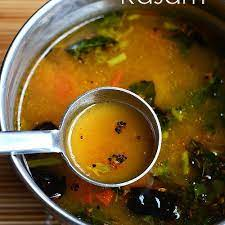

Rasam

Description
Rasam is a spicy South Indian soup.[1] While it is sometimes served on its own as a soup, it is usually served as a side for rice (food). In a traditional South Indian meal, it is part of a course that includes sambar rice and curd rice
Rasam has a distinct taste in comparison to sambar due to its own seasoning ingredients and is fluid in consistency. Chilled prepared versions are marketed commercially as well as rasam paste in bottles.[2]
Ingredients
- kokum, malabar tamarind
- Black pepper, turmeric
- chilli powder, curry leaves, garlic
Steps
- Chop 2-tomatoes into big pieces and 2-tomatoes into small pieces.
- Add cumin seeds, black peppercorns and garlic cloves in the small jar of a grinder.
- Grind them into a medium coarse paste. Transfer it to a small bowl.
- Add chopped tomatoes (2-tomatoes chopped into big pieces) in the same jar and grind until smooth puree.
-
Heat oil in a pan over medium flame. Add mustard seeds; when they begin to crackle, add asafoetida, dry red chilli and curry leaves.
- Add cumin-black-peeper-garlic paste.